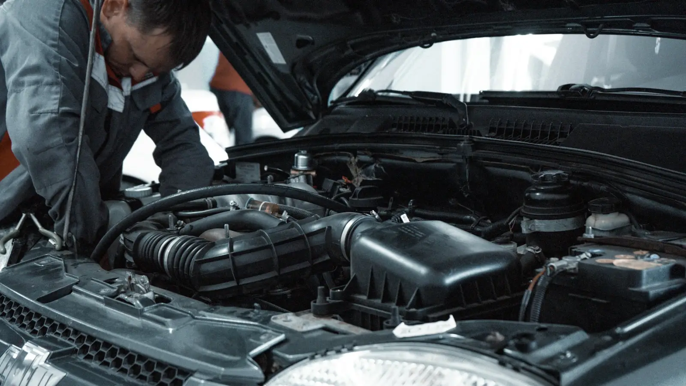

Etusivu / Yhteystiedot
Tervetuloa SuutarilaanYhteystiedot ja ajo‑ohje.
Palvelemme henkilökohtaisesti puhelimitse ja sähköpostitse. Korjaamo on Suutarilassa lähellä Kehä III:a.

Puhelin050 557 2709
Sähköpostiinfo@suutarilanautohuolto.fi
KäyntiosoiteLyhtykuja 6, 00750 Helsinki ↗
AukioloajatMa–pe 8–17
La sopimuksen mukaan
La sopimuksen mukaan
Sijainti
Löydät meidät Suutarilasta.
Korjaamomme on Suutarilassa lähellä Kehä III:a.
- KäyntiosoiteLyhtykuja 6
00750 Helsinki - AukioloajatMa–pe 8–17
La sopimuksen mukaan - Puhelin050 557 2709
- Sähköpostiinfo@
suutarilanautohuolto.fi
Varaa aika tai pyydä tarjous
Kerro, miten voimme auttaa.
Käymme työn ja kustannusarvion läpi ennen kuin aloitamme. Etkö ole varma, mitä autosi tarvitsee? Kerro tilanteesta omin sanoin.
- 01Auton rekisterinumero
- 02Ajokilometrit
- 03Tarvittava työ tai vian kuvaus
- 04Toivottu ajankohta
Haluatko mieluummin soittaa?
Soita 050 557 2709Kiitos, pyyntö on vastaanotettu.
Käymme sen läpi ja otamme yhteyttä ajan vahvistamiseksi. Kiireellisissä asioissa soita arkisin 8–17 numeroon 050 557 2709.
Tämä on demoversio, joten tietoja ei lähetetty. Oikealla sivulla pyyntö menisi suoraan korjaamon sähköpostiin.